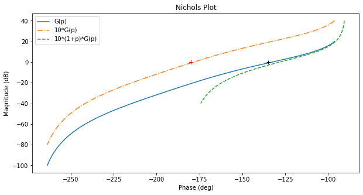
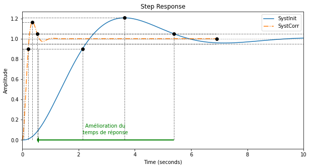
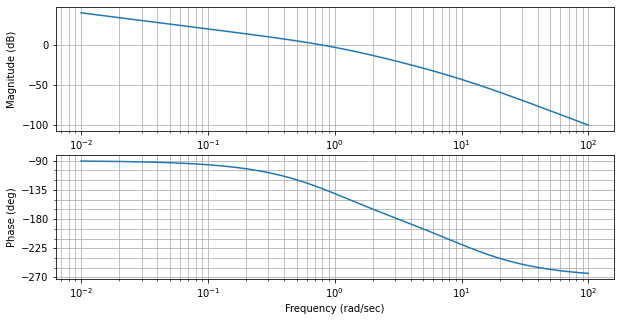
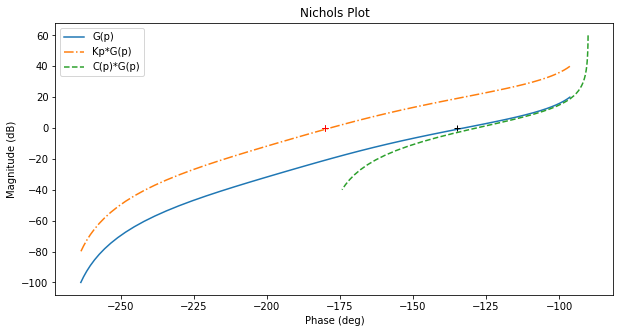
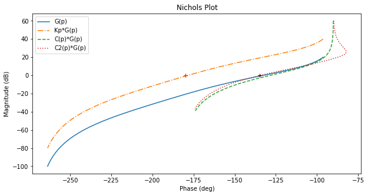
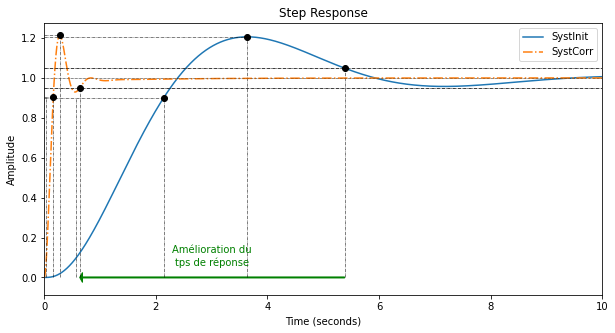
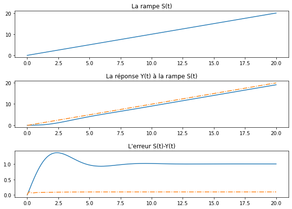

\(1^{ère}\) méthode: suppression du pôle dominant
\(\tau_d=1\) et nous vérifions les performances obtenues pour le
système corrigé.
+ show/hide code tD = 1
Corr = Kp*tf([tD, 1],1)
fig = plt.figure("Nichols",figsize=(10,5))
ax = fig.subplots()
rlf.nichols(G, grid = False, labels=['G(p)'], NameOfFigure = "Nichols")
rlf.nichols(Kp*G, grid = False, labels=['10*G(p)'], NameOfFigure = "Nichols", linestyle = '-.')
rlf.nichols(Corr*G, grid = False, labels=['10*(1+p)*G(p)'], NameOfFigure = "Nichols", linestyle = '--')
ax.plot(-180+MP, 0,'k+'); # ; pour supprimer les lignes de sortie matplotlib

Les performances du système ainsi corrigé sont :
+ show/hide code fig = plt.figure("Step Response",figsize=(10,5))
ax = fig.subplots()
# Système non corrigé
# -------------------
Gbf = feedback(G,1)
info = rlf.info()
rlf.stepWithInfo(Gbf, info, NameOfFigure="Step Response", sysName='SystInit') # Renvoie toutes les infos du step
ep = (1-info.DCGain)*100 # Erreur de position
gm, pm, wg, wp = margin(G) # Extract the gain margin (Gm) and the phase margin (Pm)
print("\nSystème non corrigé")
print("-------------------")
print(f"""Marge de phase = {pm:.3f}°
DC gain = {info.DCGain:.3f}
Rise Time = {info.RiseTime:.3f} s
Peak amplitude = {info.Peak:.3f}
Overshoot = {info.Overshoot:.3f}%
Settling Time = {info.SettlingTime:.3f} s
""")
# Système corrigé
# ---------------
Gbf_PD = feedback(Corr*G,1)
info_PD = rlf.info()
rlf.stepWithInfo(Gbf_PD, info_PD, NameOfFigure="Step Response", sysName='SystCorr', linestyle='-.') # Renvoie toutes les infos du step
ep_PD = (1-info_PD.DCGain)*100 # Erreur de position
gm, pm, wg, wp = margin(Corr*G) # Extract the gain margin (Gm) and the phase margin (Pm)
print("\nSystème corrigé")
print("---------------")
print(f"""Marge de phase = {pm:.3f}°
DC gain = {info_PD.DCGain:.3f}
Rise Time = {info_PD.RiseTime:.3f} s
Peak amplitude = {info_PD.Peak:.3f}
Overshoot = {info_PD.Overshoot:.3f}%
Settling Time = {info_PD.SettlingTime:.3f} s
""")
# Ajout de détails
ax.set_xlim(0, 10); # Zoom sur la région d'intérêt
ax.arrow(info.SettlingTime, 0, -(info.SettlingTime-info_PD.SettlingTime), 0,
length_includes_head=True, width=.005, head_width=0.05, head_length=0.05, color='g');
ax.text(info.SettlingTime-(info.SettlingTime-info_PD.SettlingTime)/2, 0.05, 'Amélioration du\ntemps de réponse', verticalalignment='bottom',
horizontalalignment='center', color='g');
Système non corrigé
-------------------
Marge de phase = 47.404°
DC gain = 0.999
Rise Time = 1.561 s
Peak amplitude = 1.206
Overshoot = 20.712%
Settling Time = 5.383 s
Système corrigé
---------------
Marge de phase = 51.827°
DC gain = 1.000
Rise Time = 0.164 s
Peak amplitude = 1.163
Overshoot = 16.303%
Settling Time = 0.528 s

\(2^{ème}\) méthode: placement fréquentiel
\(K_P\) étant fixé, traçons \(K_P*G(p)\) : le système est
instable et nous allons nous efforcer de le stabiliser par
l’intermédiaire du terme \((1+\tau_D*p)\).
Ce terme a pour effet, pour la pulsation
\(\omega=\frac{10}{\tau_D}\), de translater le module de +20 dB et
d’introduire un déphasage de +90° (+84° pour être précis).
Comme nous voulons que le système en trait mixte soit corrigé et passe
par le point (0dB,-135°), cherchons le point qui a une phase de
–135°-84° ; son module vaut -23 dB. Il sera donc corrigé par le terme
\((1+\tau_D*p)\) et passera approximativement par le point voulu
(0dB,-135°).
Sur la courbe en trait interrompu, le point (–23dB,–135°-84°) correspond
à une pulsation de 9.9rad/s, soit :
\(\tau_D=\frac{10}{\omega_{à -135°-84°}}=\frac{10}{9.9}=1.01s\).
+ show/hide code # Lecture phase
fig = plt.figure("Bode",figsize=(10,5))
ax = fig.subplots()
mag, w = rlf.getValues(G, -180+MP-84, printValue=True, NameOfFigure="Bode")
# tD
tD = 10/w # = tD conseillé
display(Markdown(rf"$\tau_D$={tD:.2f}"))
Corr = Kp*tf([tD, 1],1)
display(Markdown(r'$C(p)*G(p) = 10*\frac{(1+1.01p)}{p(1+0.1p)(1+p)}$'))
fig = plt.figure("Nichols",figsize=(10,5))
ax = fig.subplots()
rlf.nichols(G, grid = False, labels=['G(p)'], NameOfFigure = "Nichols")
rlf.nichols(Kp*G, grid = False, labels=['Kp*G(p)'], NameOfFigure = "Nichols", linestyle = '-.')
rlf.nichols(Corr*G, grid = False, labels=['C(p)*G(p)'], NameOfFigure = "Nichols", linestyle = '--')
ax.plot(-180+MP, 0,'k+'); # Ajout du repère (+) par lequel on est censé passer
gm, pm, wg, wp = margin(Corr*G) # Extrait la marge de gain (Gm) et de phase (Pm)
print(f"Le système ainsi corrigé présente une marge de phase de {pm:.2f}° et une marge de gain de {gm:.2f} dB.")
Gain à -219° = -42.869391796777016 dB
Fréquence à -219° = 9.91515778991914 rad/sec
\(\tau_D\)=1.01
\(C(p)*G(p) = 10*\frac{(1+1.01p)}{p(1+0.1p)(1+p)}\)
Le système ainsi corrigé présente une marge de phase de 51.72° et une marge de gain de inf dB.


La marge de phase étant malgré tout toujours trop grande, par essai et
erreur, nous allons augmenter \(\tau_D\).
+ show/hide code tD = 15/w # tD trouvé par essais-erreurs
display(Markdown(rf"$\tau_D$={tD:.2f}"))
Corr2 = Kp*tf([tD, 1],1)
display(Markdown(r'$C_2(p)*G(p) = 10*\frac{(1+1.51p)}{p(1+0.1p)(1+p)}$'))
fig = plt.figure("Nichols",figsize=(10,5))
ax = fig.subplots()
rlf.nichols(G, grid = False, labels=['G(p)'], NameOfFigure = "Nichols")
rlf.nichols(Kp*G, grid = False, labels=['Kp*G(p)'], NameOfFigure = "Nichols", linestyle = '-.')
rlf.nichols(Corr*G, grid = False, labels=['C(p)*G(p)'], NameOfFigure = "Nichols", linestyle = '--')
rlf.nichols(Corr2*G, grid = False, labels=['C2(p)*G(p)'], NameOfFigure = "Nichols", linestyle = ':')
ax.plot(-180+MP, 0,'k+'); # Ajout du repère (+) par lequel on est censé passer
gm, pm, wg, wp = margin(Corr2*G) # Extrait la marge de gain (Gm) et de phase (Pm)
print(f"Le système ainsi corrigé présente une marge de phase de {pm:.2f}° et une marge de gain de {gm:.2f} dB.")
\(\tau_D\)=1.51
\(C_2(p)*G(p) = 10*\frac{(1+1.51p)}{p(1+0.1p)(1+p)}\)
Le système ainsi corrigé présente une marge de phase de 45.62° et une marge de gain de inf dB.

Les performances du système ainsi corrigé sont :
+ show/hide code fig = plt.figure("Step Response",figsize=(10,5))
ax = fig.subplots()
# Système non corrigé
# -------------------
Gbf = feedback(G,1)
info = rlf.info()
rlf.stepWithInfo(Gbf, info, NameOfFigure="Step Response", sysName='SystInit') # Renvoie toutes les infos du step
ep = (1-info.DCGain)*100 # Erreur de position
gm, pm, wg, wp = margin(G) # Extract the gain margin (Gm) and the phase margin (Pm)
print("\nSystème non corrigé")
print("-------------------")
print(f"""Marge de phase = {pm:.3f}°
DC gain = {info.DCGain:.3f}
Rise Time = {info.RiseTime:.3f} s
Peak amplitude = {info.Peak:.3f}
Overshoot = {info.Overshoot:.3f}%
Settling Time = {info.SettlingTime:.3f} s
""")
# Système corrigé
# ---------------
Gbf_PD = feedback(Corr2*G,1)
info_PD = rlf.info()
rlf.stepWithInfo(Gbf_PD, info_PD, NameOfFigure="Step Response", sysName='SystCorr', linestyle='-.') # Renvoie toutes les infos du step
ep_PD = (1-info_PD.DCGain)*100 # Erreur de position
gm, pm, wg, wp = margin(Corr2*G) # Extract the gain margin (Gm) and the phase margin (Pm)
print("\nSystème corrigé")
print("---------------")
print(f"""Marge de phase = {pm:.3f}°
DC gain = {info_PD.DCGain:.3f} => Erreur de position = {ep_PD:.3f}%
Rise Time = {info_PD.RiseTime:.3f} s
Peak amplitude = {info_PD.Peak:.3f}
Overshoot = {info_PD.Overshoot:.3f}%
Settling Time = {info_PD.SettlingTime:.3f} s
""")
# Ajout de détails
ax.set_xlim(0, 10); # Zoom sur la région d'intérêt
ax.arrow(info.SettlingTime, 0, -(info.SettlingTime-info_PD.SettlingTime), 0,
length_includes_head=True, width=.005, head_width=0.05, head_length=0.05, color='g');
ax.text(info.SettlingTime-(info.SettlingTime-info_PD.SettlingTime)/2, 0.05, 'Amélioration du\ntps de réponse', verticalalignment='bottom',
horizontalalignment='center', color='g');
Système non corrigé
-------------------
Marge de phase = 47.404°
DC gain = 0.999
Rise Time = 1.561 s
Peak amplitude = 1.206
Overshoot = 20.712%
Settling Time = 5.383 s
Système corrigé
---------------
Marge de phase = 45.620°
DC gain = 1.000 => Erreur de position = 0.002%
Rise Time = 0.123 s
Peak amplitude = 1.213
Overshoot = 21.340%
Settling Time = 0.636 s

+ show/hide code import warnings # Pour gérer les warnings
# Mesure de l'erreur de vitesse
t = linspace(0, 20, 1000)
s = t;
warnings.filterwarnings('ignore') # Pour désactiver les warnings inutiles
[y, t, xout] = lsim(Gbf,s,t) # Simuler la réponse à une rampe => erreur de vitesse
[y2, t, xout2] = lsim(Gbf_PD,s,t) # Simuler la réponse à une rampe => erreur de vitesse
warnings.filterwarnings('default') # Pour réactiver les warnings
plt.figure("Erreur de vitesse",figsize=(10,7))
plt.subplot(3,1,1); plt.plot(t,s); plt.title("La rampe S(t)")
plt.subplot(3,1,2); plt.plot(t,y); plt.plot(t, y2, linestyle='-.'); plt.title("La réponse Y(t) à la rampe S(t)")
plt.subplot(3,1,3); plt.plot(t,(s-y)); plt.plot(t, (s-y2), linestyle='-.'); plt.title("L'erreur S(t)-Y(t)")
plt.subplots_adjust(hspace=0.5) # Pour laisser un peu d'espace pour les titres
ev = s[-1] - y[-1] # Erreur de vitesse système original
ev2 = s[-1] - y2[-1] # Erreur de vitesse du système corrigé
display(Markdown(rf"L'erreur de vitesse du système original vaut {ev*100:.1f}% et celle du système corrigé vaut {ev2*100:.1f}%."))
L’erreur de vitesse du système original vaut 100.0% et celle du système
corrigé vaut 10.0%.
